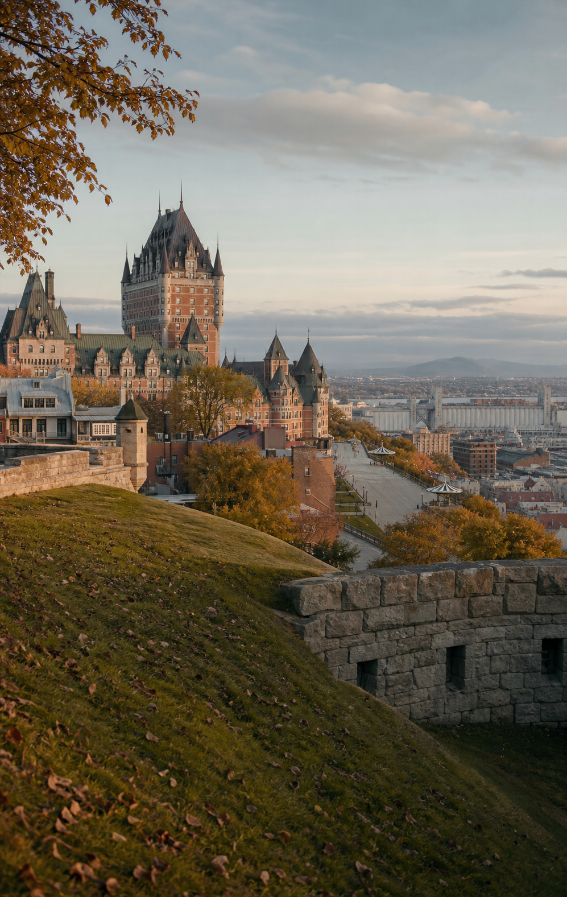
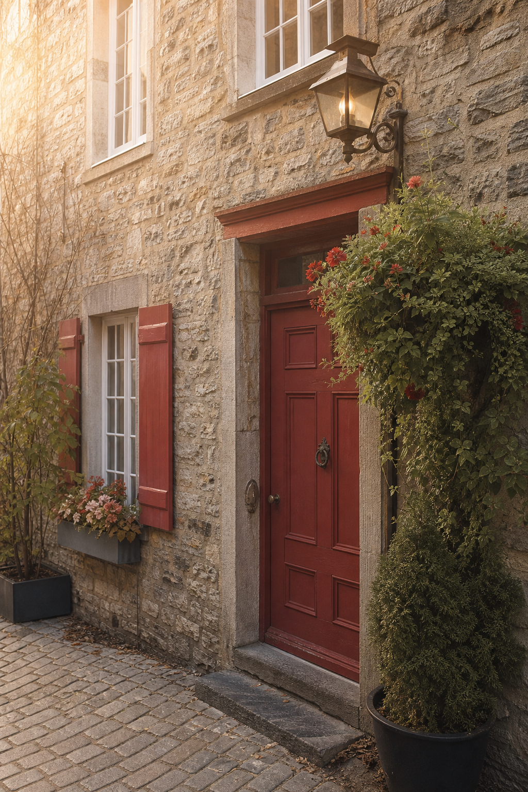
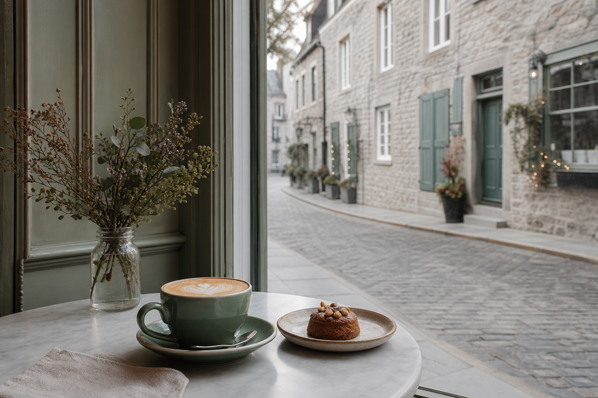
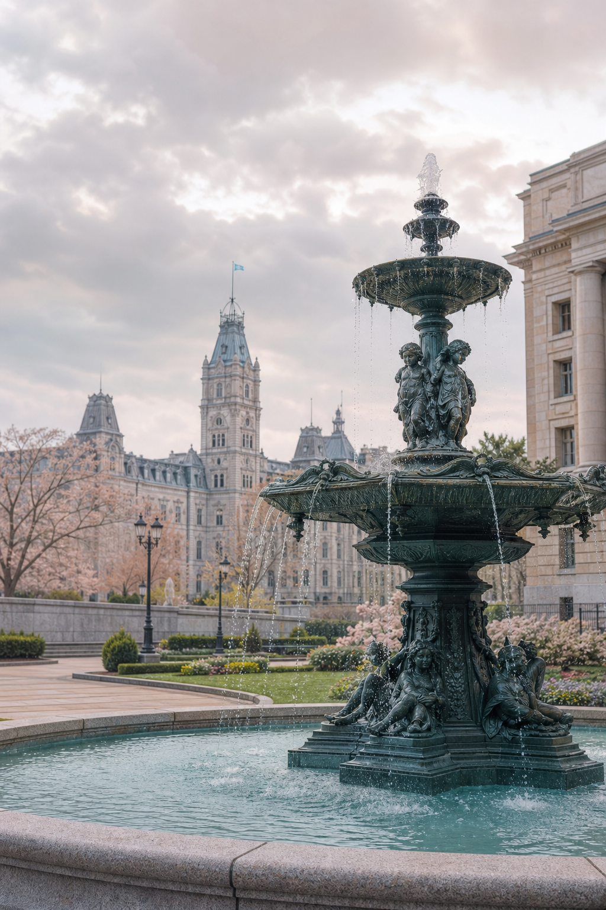
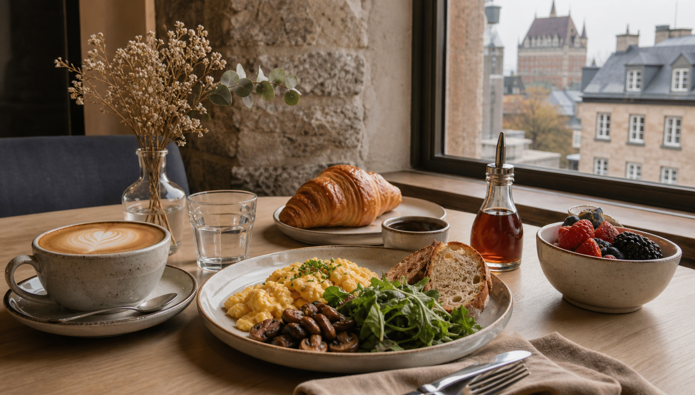
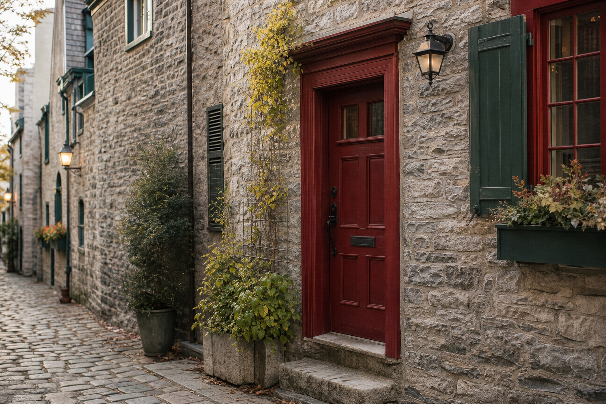
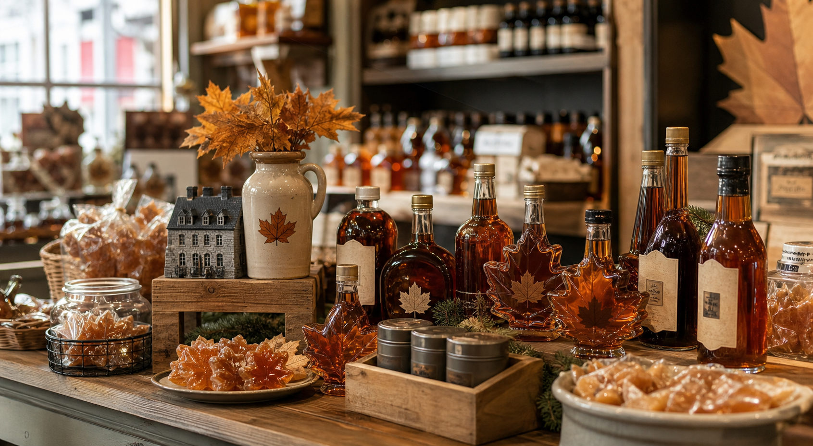

景点
Fontaine de Tourny
从省议会大厦前的喷泉开始。早上人少，适合先拍开场照，也方便附近停车后进入老城。

Curated day plan

从省议会大厦前的喷泉开始。早上人少，适合先拍开场照，也方便附近停车后进入老城。

魁北克风 brunch，离上城路线近。适合把早餐和早午餐合并，后面走平台和城堡会轻松很多。
栏杆、草坪、城堡和河景在这一段连起来。这里是整天最适合拍全景和背影的地方。

沿达费林平台慢慢走到芳堤娜城堡。可以进酒店看大堂、楼梯、信箱和纪念品店。

坐缆车或步行下到下城后，在 Place Royale 附近停一下。咖啡、甜点和街景都很顺路。

小尚普兰街不长，适合边逛边拍。红门、石墙、橱窗和坡道会比单个点更出片。

买枫糖、枫糖冰淇淋和小礼物。位置在老城活动范围内，很适合作为下午补给。
从下城往上城走，经过告白台阶和 Prescott Gate。体力不想耗太多的话，可以改坐缆车上去。
最后去全年圣诞礼品店，再回到老城高处看傍晚。这个结尾比较轻，不会像赶景点。
Route map
09:30 · 从省议会大厦前开始，步行进入老城。